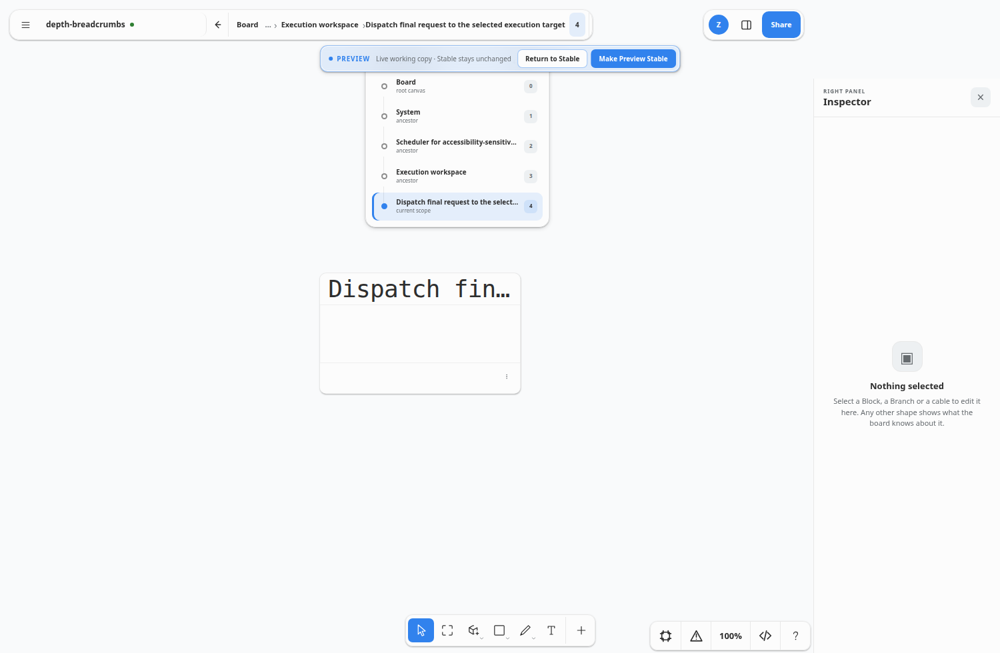

Depth is the path control.
A small number at the end of the structural breadcrumb now states the current zero-based depth and is the sole hit target for the complete ancestor path. The disclosure is deliberately anchored to the current crumb, not to the broad application bar.

Real-browser capture from the depth-four fixture. The compact line retains Board, the immediate parent, and Dispatch; the one ellipsis represents the earliest hidden descendants. The open panel begins at Dispatch’s left edge and the counter is its only disclosure control.
Counter
The browser journey asserts the visible counter matches data-depth; at parent scope it reads 3, with Board/root at 0.
Geometry
The same journey measures a 0 px delta between the open panel’s left edge and the current crumb at a collision-safe desktop position.
Ordering
Unit and browser checks assert that compaction removes level 1 first, preserving root plus immediate parent/current and emitting one accessible ellipsis.
Read the real-browser journey · Previous full-path gallery